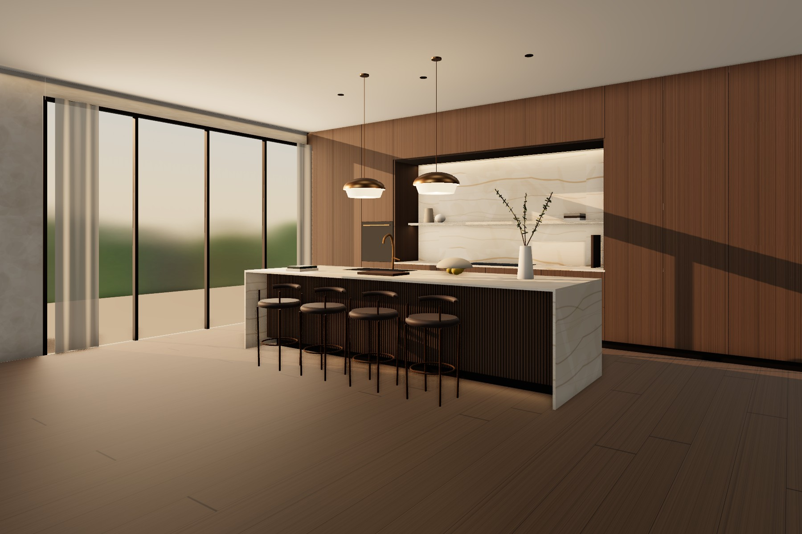
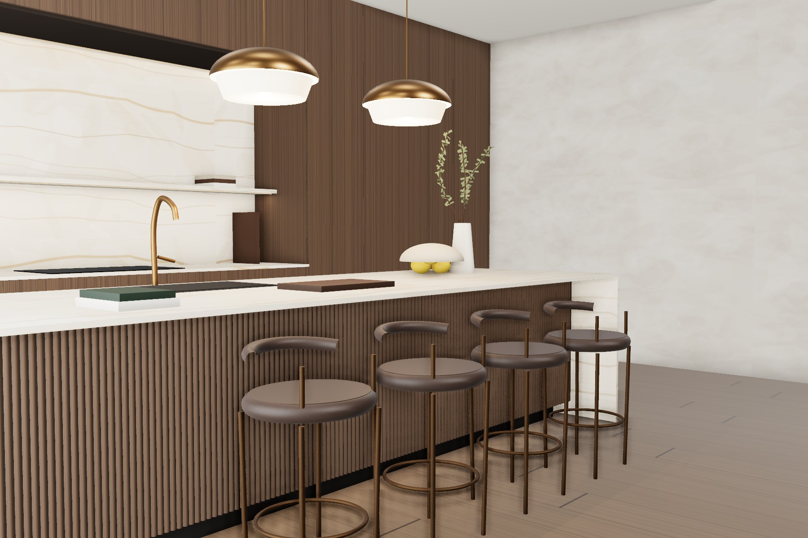
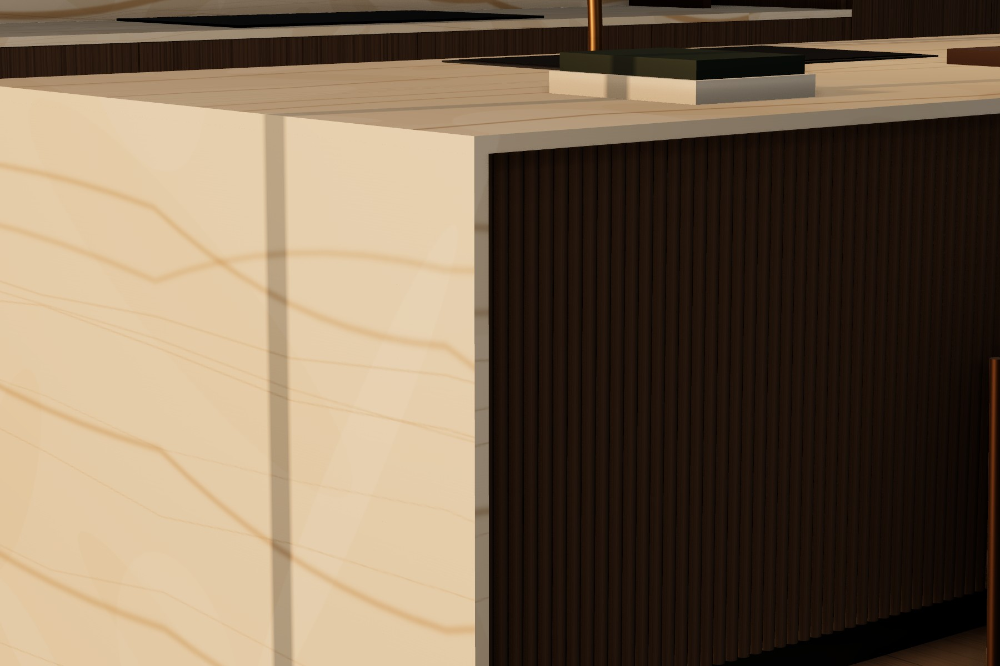
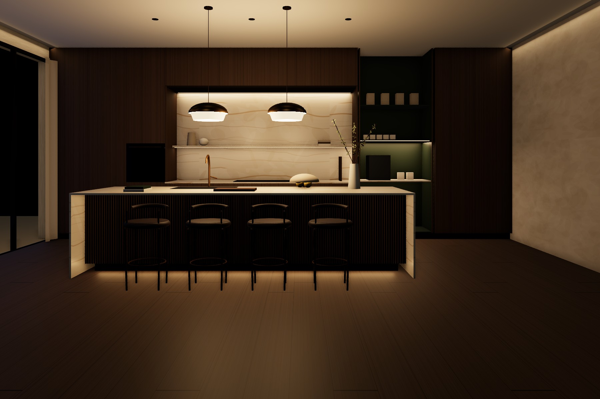

La pierre, le bois fumé et la lumière rasante. Une cuisine pensée comme une pièce à vivre, où tout ce qui est technique s'efface.
Vous souhaitez une cuisine ouverte sur le séjour, assez généreuse pour cuisiner à deux et accueillir dix convives, sans que l'équipement prenne le pas sur l'architecture. Nous avons construit le concept autour de cette idée : un îlot central qui rassemble, et un mur de rangements qui se fait oublier.
Ces éléments sont nos hypothèses de travail. Nous les confirmerons avec vous lors du relevé sur site.
L'îlot en quartzite est traité comme une sculpture. Sa veine descend sans interruption jusqu'au sol, et une lumière discrète sous sa base le fait paraître suspendu.
Derrière lui, un mur de chêne fumé toute hauteur, sans poignées, accueille réfrigération, fours et rangements. Au centre, une niche taillée dans la même pierre encadre la cuisson et devient le point focal depuis le séjour. Le reste disparaît : la hotte dans le plafond, le petit électroménager derrière des portes escamotables.
Teintes indicatives à l'écran. Les échantillons physiques seront validés sous la lumière de la pièce.
Finition adoucie, 20 mm. Plan de l'îlot, retombées en cascade et niche, issus d'un même bloc pour une veine continue.
Îlot · niche · étagère 30 mmFil droit et vertical, raccordé d'une façade à l'autre. Vernis mat à 10 % de brillance.
Mur technique · parquet 240 mmCannelures de 20 mm au pas de 25 mm, huile-cire mate. Elles captent la lumière rasante de l'après-midi.
Habillage de l'îlotTaloché lissé en deux passes, d'un blanc chaud et vivant. Un joint creux de 10 mm le détache du plafond.
Murs · plafondLaque satinée à l'intérieur de l'office-caféier, quincaillerie en laiton finition bronze brossé.
Office · robinetterie · poignéesSur les assises des tabourets, montés sur une structure en bronze patiné. Il se patine avec l'usage.
Tabourets de comptoirLe mur technique. Réfrigérateur, congélateur et fours en colonnes, une niche de cuisson de 3 m au centre, l'office-caféier et le cellier à droite.
L'îlot. Évier et deux lave-vaisselle côté cuisine, quatre assises côté séjour sur un débord de 300 mm.
Les circulations. Une allée de 1 200 mm permet de cuisiner à deux sans se gêner ; 1 000 mm derrière les tabourets laissent passer sans déranger.
La lumière du jour vient en premier. Le soir, cinq couches de lumière chaude prennent le relais, toutes gradables. Choisissez une scène pour la voir sur l'élévation.
Quartzite en cascade avec onglets à 45°, base en chêne cannelé, ossature acier pour la portée et le débord. Prises escamotables dans le plan.
Façades toute hauteur en chêne fumé, ouverture par pression, joint creux au plafond. L'électroménager est entièrement intégré.
Portes escamotables qui s'effacent dans le caisson et dévoilent un intérieur laqué vert forêt, avec plan de travail et prise dédiée.
Structure en bronze patiné, assise en cuir semi-aniline moka. 600 mm par convive.
Coupole en bronze brossé et diffuseur en albâtre pour une lumière douce et chaude au-dessus des assises.
Chaque vue garde les mêmes matériaux et le même mobilier, pour lire le projet à différents moments de la journée. Images de synthèse issues de la maquette 3D du projet ; teintes et veinage définitifs selon les échantillons et les tranches choisies.




Les tranches de quartzite sont réservées et numérotées chez le marbrier pour que la veine passe du plan aux retombées sans rupture.
Une plinthe en retrait de 80 mm et une lumière rasante au sol détachent l'îlot du parquet.
Crédence et étagère sont taillées dans la même pierre et éclairées par l'arrière ; la hotte se fond dans le plafond.
Derrière deux portes en chêne, un intérieur vert forêt accueille le café et le petit électroménager.
Pas de poignées, un fil du bois continu, un joint creux de 10 mm au plafond : rien ne vient interrompre les lignes.
Validation du concept. Nous revoyons ensemble cette proposition et ajustons ce qui doit l'être.
Relevé et vérifications techniques. Mesures sur site, capacité du plancher pour l'îlot en pierre, évacuations, extraction de la hotte et alimentation électrique, avec les bureaux d'études concernés.
Sélection de la pierre. Choix des tranches de quartzite avec vous, chez le marbrier.
Plans techniques. Plans, élévations, coupes et calepinage de la pierre, puis mise à jour des vues 3D.
Estimation budgétaire. Une estimation détaillée par poste, établie après le relevé : [à compléter].